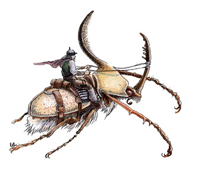

Beetle, Giant

| Bombardier
| Boring
| Fire
| Rhinoceros
| Stag
| Water
|
CLIMATE/TERRAIN:
| Any forest
| Any land
| Any land
| Any jungle
| Any forest
| Fresh water
|
FREQUENCY:
| Common
| Common
| Common
| Uncommon
| Common
| Common
|
ORGANIZATION:
| Solitary
| Solitary
| Solitary
| Solitary
| Solitary
| Solitary
|
ACTIVITY CYCLE:
| Day
| Night
| Night
| Any
| Any
| Any
|
DIET:
| Carnivore
| Omnivore
| Omnivore
| Herbivore
| Herbivore
| Omnivore
|
INTELLIGENCE:
| Non- (0)
| Animal (1)
| Non- (0)
| Non- (0)
| Non- (0)
| Non- (0)
|
TREASURE:
| Nil
| C, R, S, T
| Nil
| Nil
| Nil
| Nil
|
ALIGNMENT:
| Neutral
| Neutral
| Neutral
| Neutral
| Neutral
| Neutral
|
NO. APPEARING:
| 3-12
| 3-18
| 3-12
| 1-6
| 2-12
| 1-12
|
ARMOR CLASS:
| 4
| 3
| 4
| 2
| 3
| 3
|
MOVEMENT:
| 9
| 6
| 12
| 6
| 6
| 3, Sw 9
|
HIT DICE:
| 2+2
| 5
| 1+2
| 12
| 7
| 4
|
THAC0:
| 19
| 15
| 19
| 9
| 13
| 17
|
NO. OF ATTACKS:
| 1
| 1
| 1
| 2
| 3
| 1
|
DAMAGE/ATTACK:
| 2-12
| 5-20
| 2-8
| 3-18/2-16
| 4-16/1-10/
| 3-18
|
|
|
|
|
| 1-10
|
|
SPECIAL ATTACKS:
| Acid cloud
| Nil
| Nil
| Nil
| Nil
| Nil
|
SPECIAL DEFENSES:
| Fire cloud
| Nil
| Nil
| Nil
| Nil
| Nil
|
MAGIC RESISTANCE:
| Nil
| Nil
| Nil
| Nil
| Nil
| Nil
|
SIZE:
| S (4' long)
| L (9' long)
| S (2 l/2'
| L (12' long)
| L (10' long)
| M (6' long)
|
|
|
| long)
|
|
|
|
MORALE:
| Elite (13)
| Elite (14)
| Steady (12)
| Elite (14)
| Elite (13)
| Elite (14)
|
XP VALUE:
| 120
| 175
| 35
| 4,000
| 975
| 120
|
Giant beetles are similar to their more ordinary counterparts, but thousands
of times larger -- with chewing mandibles and hard wings that provide
substantial armor protection.
Beetles have two pairs of wings and three pairs of legs. Fortunately, the
wings of a giant beetle cannot be used to fly, and in most cases, its six bristly
legs do not enable it to move as fast as a fleeing man. The hard, chitinous
shell of several varieties of these beetles are brightly colored, and sometimes
have value to art collectors. While their shells protect beetles as well as plate
mail armor, it is difficult to craft armor from them, and a skilled alchemist
would need to be brought in on the job.
All beetles are basically unintelligent and always hungry. They will feed on
virtually any form of organic material, including other sorts of beetles. They
taste matter with their antennae, or feelers; if a substance tasted is organic,
the beetle grasps it with its mandibles, crushes it, and eats it. Because of
the thorough grinding of the mandibles, nothing eaten by giant beetles can be
revived by anything short of a wish. Beetles do not hear or see well, and rely primarily on taste and feel.
Except as noted below, giant beetles are not really social animals; those that
are found near each other are competitors for the same biological niche, not
part of any family unit.
Bombardier Beetle
The bombardier beetle is usually found above ground in wooded areas. It
primarily feeds on offal and carrion, gathering huge heaps of the stuff in which to
lay its eggs.
Combat: If it is attacked or disturbed, there is a 50% chance each round that it will
turn its rear toward its attacker and fire off an 8-foot, spherical cloud of
reeking, reddish, acidic vapor from its abdomen. This cloud causes 3d4 points of
damage per round to any creature within range. Furthermore, the sound caused by
the release of the vapor has a 20% chance of stunning any creature with a
sense of hearing within a 15-foot radius, and a like chance for deafening any
creature that was not stunned. Stunning lasts for 2d4 rounds, plus an additional 2d4
rounds of deafness afterwards. Deafening lasts 2d6 rounds. The giant
bombardier can fire its vapor cloud every third round, but no more than twice in eight
hours.
Ecology: The bombardier action of this beetle is caused by the explosive mixture of two
substances that are produced internally and combined in a third organ. If a
bombardier is killed before it has the opportunity to fire off both blasts, it is
possible to cut the creature open and retrieve the chemicals. These chemicals
can then be combined to produce a small explosive, or fire a projectile, with
the proper equipment.
The chemicals are also of value to alchemists, who can use them in various
preparations. They are worth 50 gp per dose.
Boring Beetle
Boring beetles feed on rotting wood and similar organic material, so they are
usually found individually inside huge trees or massed in underground tunnel
complexes.
Combat: The large mandibles of the boring beetle have a powerful bite and will inflict
up to 20 points on damage to the victim.
Habitat/Society: Individually, these creatures are not much more intelligent than other giant
beetles, but it is rumored that nests of them can develop a communal
intelligence with a level of consciousness and reasoning that approximates the human
brain. This does not mean that each beetle has the intelligence of a human, but
rather that, collectively, the entire nest has attained that level. In these cases,
the beetles are likely to collect treasure and magical items from their
victims.
Ecology: In tunnel complexes, boring beetles grow molds, slimes, and fungi for food,
beginning their cultures on various forms of decaying vegetable and animal matter
and wastes.
One frequent fungi grown is the shrieker, which serves a dual role. Not only
is the shrieker a tasty treat for the boring beetle, but it also functions as an
alarm when visitors have entered the fungi farm. Boring beetles are quick to
react to these alarms, dispatching the invaders, sometimes eating them, but in
any case gaining fresh organic matter on which to raise shrieker and other
saprophytic plants.
Fire Beetle
The smallest of the giant beetles, fire beetles are nevertheless capable of
delivering serious damage with their powerful mandibles. They are found both
above and below ground, and are primarily nocturnal.
Combat: Despite its name, the fire beetle has no fire attacks, relying instead on its
huge mandibles to inflict up to three times the damage of a dagger in a single
attack.
Ecology: Fire beetles have two special glands above their eyes and one near the back of
their abdomens. These glands produce a luminous red glow, and for this reason
they are highly prized by miners and adventurers. This luminosity persists for
ld6 days after the glands are removed from the beetle, and the light shed will
illuminate a radius of 10 feet.
The light from these glands is "cold" -- it produces no heat. Many mages and
alchemists are eager to discover the secret of this cold light, which could be
not only safe, but economical, with no parts to heat up and burn out. In theory,
they say, such a light source could last forever.
Rhinoceros Beetle
This uncommon monster inhabits tropical and subtropical jungles. They roam the
rain forests searching for fruits and vegetation, and crushing anything in
their path. The horn of a giant rhinoceros beetle extends about 6 feet.
Combat: The mandibles of this giant beetle inflict 3d6 points of damage on anyone
unfortunate enough to be caught by them; the tremendous horn is capable of causing
2d8 points of damage by itself.
Ecology: The shell of this jungle dweller is often brightly colored or iridescent. If
retrieved in one piece, these shells are valuable to clerics of the Egyptian
pantheon, who use them as giant scarabs to decorate temples and other areas of
worship. It is a representation of this, the largest of all beetles, that serves
as the holy symbol for clerics of Apshai, the Egyptian god whose sphere of
influence is said to include all insects.
Stag Beetle
These woodland beetles are very fond of grains and similar growing crops, and
they sometimes become great nuisances when they raid cultivated lands.
Combat: Like other beetles, they have poor sight and hearing, but they will fight if
attacked or attack if they encounter organic material they consider food. The
giant stag beetle's two horns are usually not less than 8 feet long; they inflict
up to 10 points of damage each.
Ecology: The worst damage from a stag beetle raid is that done to crops; they will
strip an entire farm in short order. Livestock suffers too, stampeding in fear and
wreaking more havoc. The beetles may even devour livestock, if they are hungry
enough.
Water Beetle
The giant water beetle is found only in fresh water no less than 30 feet deep.
Combat: Voracious eaters, these beetles prey upon virtually any form of animal, but
will eat almost anything. Slow and ponderous on land, they move very quickly in
water. Giant water beetles hunt food by scent and by feeling vibrations.
Habitat/Society: Water beetles sometimes inhabit navigable rivers and lakes, in which case they
can cause considerable damage to shipping, often attacking and sinking craft
to get at the tasty morsels inside.
Ecology: Although they are air breathers, water beetles manage to stay underwater for
extended periods of time by catching and holding a bubble of air beneath their
giant wings. They will carry the bubble underwater, where it can be placed in a
cave or some other cavity capable of holding an air supply.
Index